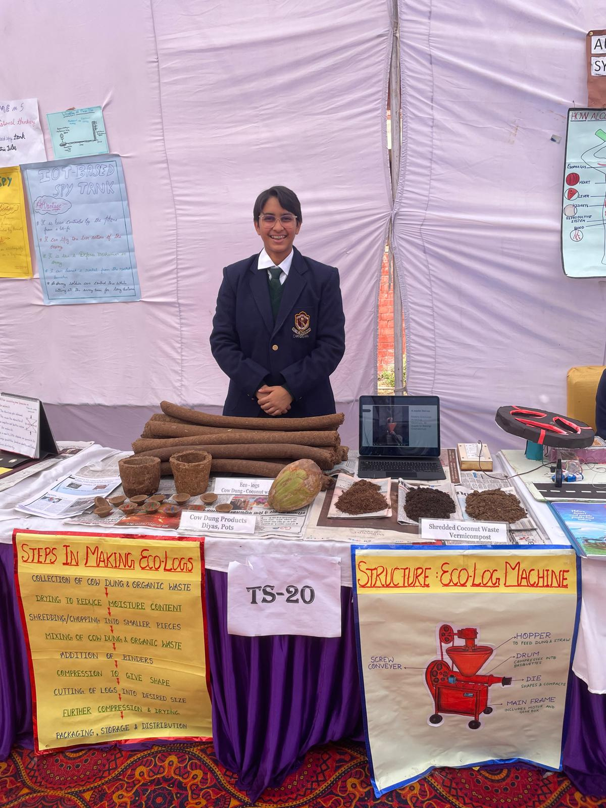
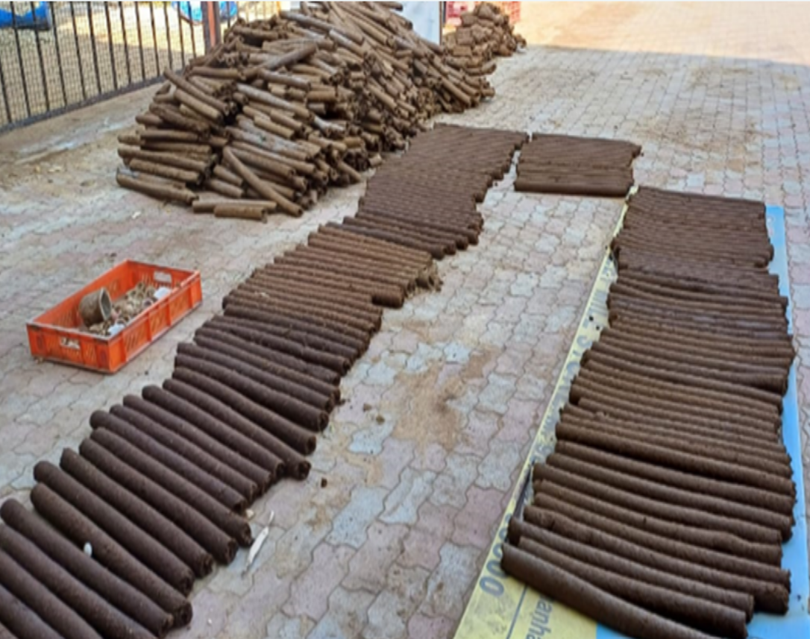

How it started
The project began after my grandfather passed away. During that time, I started noticing the amount of wood used in traditional cremations and began thinking about whether there could be a more sustainable option that still respected the emotions, rituals, and traditions involved.
Electric crematoriums already exist, but in many places people are hesitant to use them because cremation is deeply cultural. I wanted to find a solution that was more sustainable but still familiar enough for people to accept.
That led me to the idea of replacing part of the firewood with fuel logs made from waste materials, instead of asking people to completely change the cremation process.
The waste problem
I focused on two waste streams: cow dung and coconut shells. Cow dung is already familiar as a traditional fuel, but cow dung waste can also create sanitation problems. If unmanaged, it can choke drains and sewers and contribute to water pollution.
Coconut shells are also a problem. As coconut water consumption increases, more shells are discarded. They take a long time to degrade, create urban waste, and leftover water inside the shells can become a breeding ground for mosquitoes.
Ecologs came from trying to solve these problems together: using cow dung and shredded coconut shell waste to make fuel logs that could partly replace tree wood in cremations.

What Ecologs does
Ecologs are cylindrical fuel logs made from a blend of cow dung and shredded coconut shell waste. Cow dung makes the logs more culturally familiar, while the coconut shell material improves the fuel quality and makes use of another waste stream.
The logs are designed to be easy to dry, handle, transport, and burn. A hole through the center helps with drying and combustion. The machine mixes the material, shapes it, and extrudes long logs that can then be sun-dried.
Building the process
A major part of the project was figuring out the full process, not just the material. I worked on how the waste would be collected, shredded, mixed, shaped, dried, and transported for crematorium use.
I also worked on the machine setup because the project needed to be repeatable. The logs had to be strong enough to handle, dry quickly enough to be practical, and simple enough to produce locally.


Testing and improvement
Pure dried cow dung has a lower calorific value than wood, so the mixture had to be improved. Adding shredded coconut shell material helped increase the fuel value and also improved the strength and drying quality of the logs.
Through testing, I found that blending coconut material with cow dung could bring the calorific value closer to that of wood powder. This made the product more practical because it was not just symbolic or eco-friendly, but actually useful as a fuel.
Impact
The impact of Ecologs came from connecting waste management with a real local need. Cow dung waste could be given value instead of becoming a sanitation problem. Coconut shell waste could be shredded and reused instead of being left to pile up or breed mosquitoes.
At the crematorium level, Ecologs could reduce dependence on tree wood. In the model calculation, cow dung and coconut peat could be converted into logs that replace part of the firewood used for cremation. At Balongi crematorium, this kind of partial replacement was saving 8 trees every day.
The cost also mattered. Locally, tree wood was much more expensive than the blended Ecologs. That made the idea more practical because it was not only greener, but also more affordable.
Videos
I also explained the project through video and media coverage.


Where it went
Ecologs won State Rank 1 at the Rajya Stariya Bal Vaigyanik Pradarshani (State Young Scientists Exhibition). It was then presented at the national level at the Rashtriya Bal Vaigyanik Pradarshani, also called the National Young Scientists Exhibition.
At the exhibition, I presented Ecologs as a practical sustainability project connecting cow dung waste, coconut shell waste, machine-based production, and crematorium use.
What I took from it
Ecologs taught me that sustainability work is not only about inventing a greener material. It is also about whether the material fits the people, the process, the cost, and the culture around it.
It also changed how I think about waste. Cow dung and coconut shells were not just things to dispose of. With the right system, they could become useful resources.